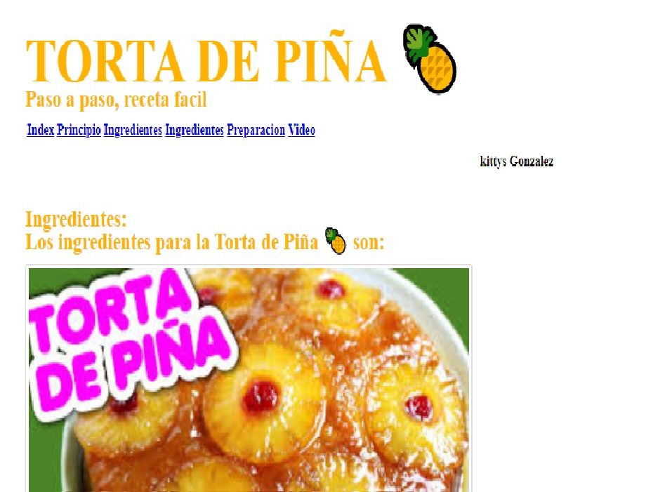

Olá!
Eu sou kittys201, é meo nome artistico, sou Licenciatura em Educação Menção em Língua e Literatura com mais de 25 anos de experiência na área de Graduado em Educação, Letras e Letras, com mais de 25 anos de experiência na área de Super Aprendizagem ou Rapid Learning..
Tenho experiência na área de educação de jovens com competências especialmente destacadas ou com déficit de aprendizagem, executando técnicas ou projetos acadêmicos e consultorias personalizadas conforme necessário com muito bons resultados.
Participo ativamente nas áreas de tecnologia desde que pertenço ao Isoc Capitulo de Venezuela (2009), estudei desde aquele ano até o presente me envolvo em tudo relacionado à internet, a web. Atualmente estudo na  , que é a plataforma de ensino para refugiados e imigrantes no Brasil, porque sei que o futuro mais próximo e de maior sucesso é online, principalmente na programação.
, que é a plataforma de ensino para refugiados e imigrantes no Brasil, porque sei que o futuro mais próximo e de maior sucesso é online, principalmente na programação.
Formação
2015 - 2017
Universidad Pedagógica Experimental Libertador – UPEL ex-Universidad Pedagogica Experimental de Miranda J.M. Siso Martinez
Licenciatura na área de Lingua, Literatura e Comunicaciones.
1980 - 1981
Colegio Educativo Nacional Gran Colombia
Profesora em Lingua para Ensino medio
Experiência
Dez 2020 ate 2021 – Atualidade
Profesora do Espanhol em red, aulas para Enfermeiras, Doutores e miembros do Igresia de Jesus Cristo dos Santos dos Ultimos Dias
Eu ofereço serviços comunitários em várias áreas, conforme solicitado pela comunidade.

Dic 2019 – Atualidade
FREELANCER
AUTÔNOMO
2009 – Atualidade
Pesquisador e Desenvolvedor de Técnicas para melhorar e otimizar Aprendizagem e Desenvolvimento em diversas áreas e condições.
Campus de observação e trabalho UEP Colégio Nazareno de San Pablo e Igresia do Jesus Cristo dos Santos dos Ultimos Dias.
Projetos recentes como desenvolvedor web
Proyecto para Isoc Capitulo de Venezuela, 2018
Ejecucion del Proyecto de IoT en la Universiodad Central de Venezuela
Torta de Pina(ABACAXI)
(Prática de CSS)
Primeiro exercício com CSS3. Usando uma receita de Pina e aplicando CSS3 para estilos HTML.
Creacion de Template usando Grid em CSS3
(Prática de CSS3 com Grid)
Prática de CSS3 com Grid. .
PROYECTOS,TALLERES Y COLABORACIONES COMUNITARIAS
TALLER CAMPUS LACNIC 2018
Taller Practico de IPv6 para adquirir uma mayor comprencao do Imprementacao correta e uso do IPv6.
Curso de PYTHON
Curso prático de 20 horas onde foram vistas noções básicas sobre o uso de python e gerenciamento de sua nomenclatura
Introduccion a la governanza de internet en Lac - Edicion 1-2020
Este curso tem como objetivo apresentar aos participantes da região da América Latina e do Caribe a governança da Internet de uma perspectiva ampla.
Isso significa que não são abordados apenas os aspectos relacionados à gestão de recursos críticos da Internet, como endereços IP, DNS e protocolos da Internet, mas também diferentes problemas associados ao uso da Internet e seu impacto no âmbito social e econômico.
De esta forma se abordan tanto elementos institucionales del ecosistema de Internet, como su arquitectura, así como temas como los derechos humanos e Internet, la economía digital, la ciberseguridad y temas emergentes como el Blockchain y la Inteligencia Artificial.
Fala Comigo!
Preencha o formulário ao lado para cualquier duvida.
Você também pode me encontrar nas seguintes redes sociais:

+55 (11) 933 89 0201

201kittys@gmail.com